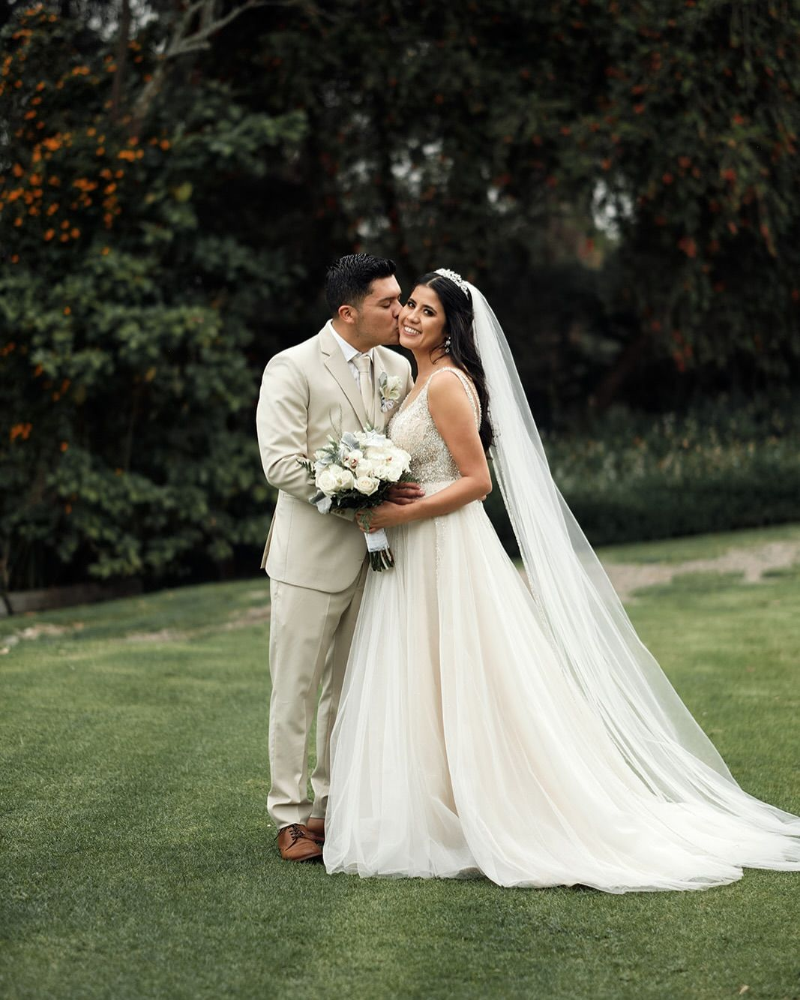
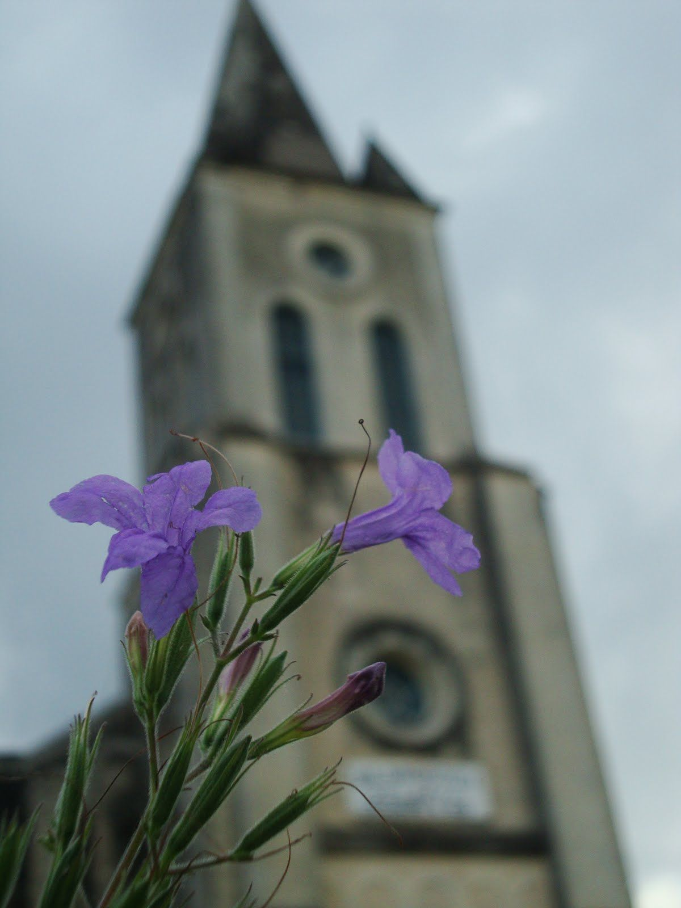
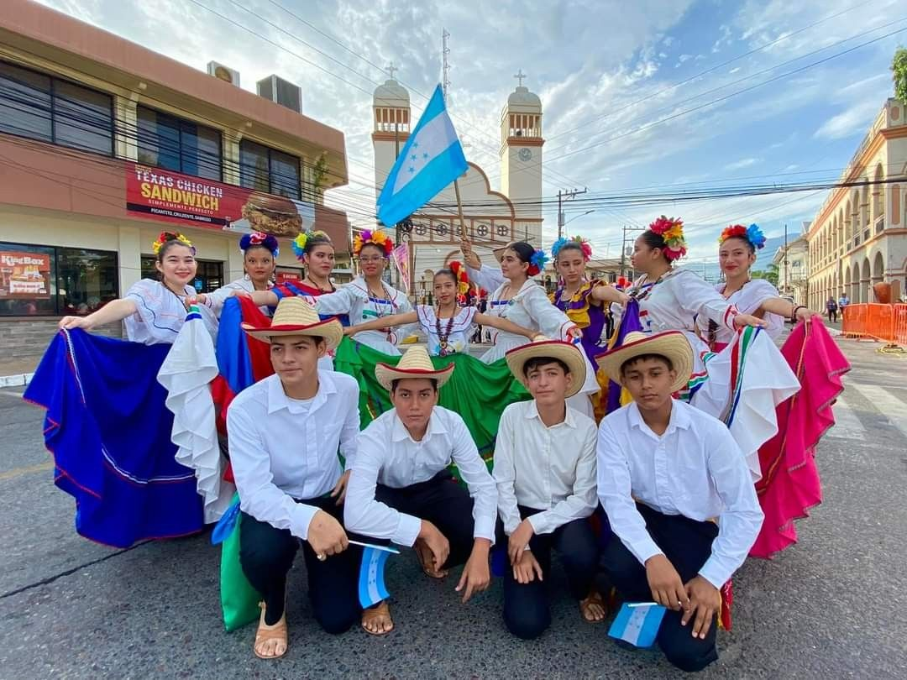
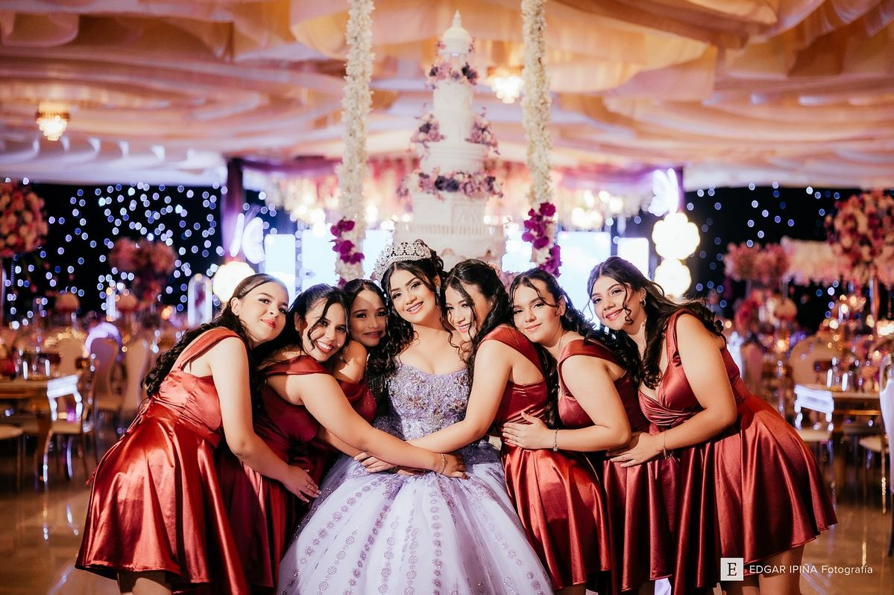

Arte en Cámara
Arte en Cámara
Arte en Cámara
Arte en Cámara
La fotografía es el arte y la técnica de capturar imágenes mediante la luz. Su función principal es conservar momentos, documentar hechos y expresar ideas o emociones a través de imágenes.
Desde su creación, la fotografía ha evolucionado constantemente gracias a los avances tecnológicos. Hoy en día es utilizada en ámbitos como el arte, el periodismo, la publicidad, la ciencia y las redes sociales.
Una buena fotografía no depende únicamente de la cámara utilizada, sino también de elementos como la iluminación, el encuadre, la composición y la creatividad del fotógrafo. Cada imagen tiene la capacidad de transmitir mensajes y contar historias sin necesidad de palabras.
La fotografía permite inmortalizar instantes únicos y compartir diferentes perspectivas del mundo, convirtiéndose en una de las formas de comunicación visual más importantes de la actualidad.
Me llamo Erick Francisco Lemus Vásquez, soy alumno de Duodécimo grado en Informática del Instituto Gubernamental Choloma. Soy fotógrafo y me gusta capturar momentos que transmiten emociones auténticas y cuentan historias únicas.
Mi objetivo no es solo tomar una imagen, sino inmortalizar instantes que reflejen la esencia de cada persona, lugar o situación en una imagen.
Me gusta probar diferentes estilos de fotografía, desde retratos y eventos hasta proyectos creativos, siempre buscando un equilibrio entre técnica y sensibilidad artística.
Me gusta experimentar con la luz, los colores y las composiciones para dar a cada fotografía un carácter propio.
Creo que la fotografía es un puente entre lo que vemos y lo que sentimos.
Por eso, cada sesión es una oportunidad para conectar con las personas y transformar recuerdos en imágenes que perduren en el tiempo.




